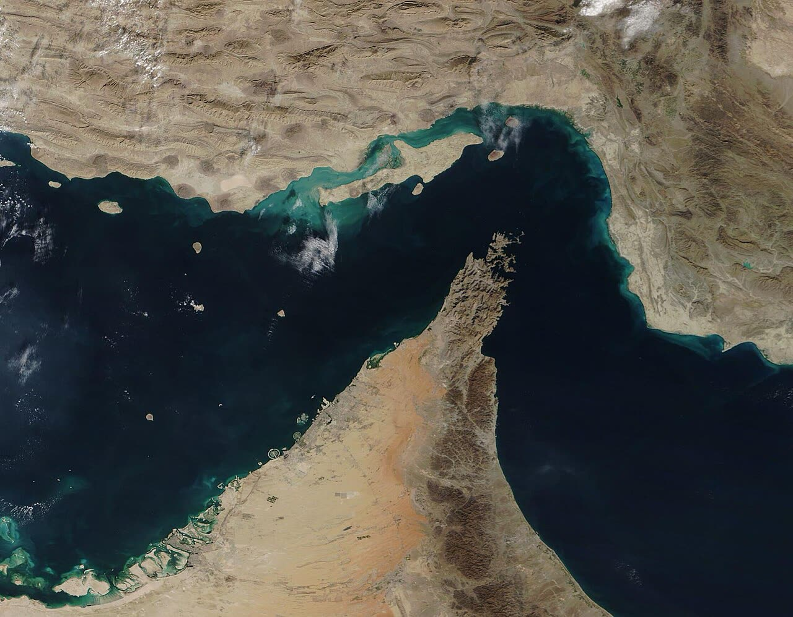

Hormuz, i Pasdaran: due petroliere sulle mine e in fiamme (nessuna conferma)
A nostro avviso è l'ennesima rivendicazione senza il nome di una nave: serve a dissuadere gli armatori più che a informare, e i prezzi del petrolio, finora, non ci credono.
Redazione Contrappunto · aggiornato il 15.11.2026

.jpg){kind=link}
Dal 28 febbraio 2026 gli Stati Uniti e Israele sono in guerra con l'Iran; ci fu una tregua in aprile, poi i combattimenti sono ripresi (Anadolu). Lo Stretto di Hormuz, da cui passava circa un quinto del petrolio e del gas del mondo prima della guerra, è sotto il controllo dell'Iran, che pretende un'autorizzazione per ogni nave, mentre gli Usa tengono un blocco sui porti iraniani (Al Jazeera). Domenica 15 novembre la Marina dei Guardiani della Rivoluzione islamica (IRGC, i Pasdaran) ha dichiarato che due petroliere sono finite sulle mine a sud dello stretto, sono esplose e hanno preso fuoco. Dice che cercavano di passare senza permesso, con i sistemi di navigazione e di identificazione spenti. Non ha dato i nomi delle navi né informazioni su eventuali vittime. Questa è l'affermazione di una sola parte in guerra: la notizia, qui, è che cosa dice l'IRGC e che cosa si può controllare.
Vedi di più: 7 parole spiegate, cosa si racconta
Cosa si raccontaTASS, agenzia di Stato russa, e Anadolu, agenzia turca controllata dallo Stato, riportano la nota dei Pasdaran con il suo titolo: «due petroliere sulle mine». TASS cita il testo diffuso su Telegram; Anadolu aggiunge che l'IRGC aveva già dato un annuncio simile venerdì 13 novembre. La testata polacca Wirtualna Polska parla invece di tre petroliere nella giornata di sabato, citando Reuters e l'agenzia iraniana IRNA, e scrive che lo stretto non è sicuro come dice Trump. Nelle fonti lette non c'è una conferma di terzi né una risposta americana a questa rivendicazione. [TASS] [Anadolu Agency] [Wirtualna Polska]
- IRGC (Pasdaran)
- Corpo dei Guardiani della Rivoluzione islamica: esercito ideologico della Repubblica islamica, con una propria Marina che controlla lo stretto dal lato iraniano. È una parte in guerra.
- Stretto di Hormuz
- Il braccio di mare tra Iran e Oman che collega il Golfo all'oceano: da lì esce gran parte del petrolio del Golfo (circa un quinto del consumo mondiale prima della guerra, Al Jazeera).
- Mina navale
- Ordigno esplosivo posato in acqua, che scoppia al passaggio o al contatto con una nave. Che l'Iran ne abbia posate è riportato (circa una dozzina, secondo Reuters a marzo, citata da gCaptain); che una certa nave ne abbia colpita una va dimostrato caso per caso.
- Sistemi di identificazione spenti (AIS)
- Le navi trasmettono posizione e nome con un sistema automatico. L'IRGC dice che le petroliere lo avevano spento: se è vero, è anche il motivo per cui nessuno può ricostruire dall'esterno dove fossero.
- UKMTO e JMIC
- Centri che seguono la sicurezza della navigazione commerciale nella zona e pubblicano avvisi (nelle fonti lette: l'ufficio britannico UKMTO e il Joint Maritime Information Center). Sono la fonte terza che di solito conferma o no gli incidenti.
- Brent
- Prezzo di riferimento del petrolio europeo, in dollari al barile (contratti future).
- TASS e Anadolu
- TASS: agenzia di Stato russa, voce del governo di Mosca. Anadolu: agenzia turca controllata dallo Stato (secondo il nostro registro delle fonti). Wirtualna Polska: portale polacco di orientamento centrista.
- Domenica 15 novembre i Pasdaran hanno dichiarato che due petroliere hanno urtato mine e preso fuoco a sud dello stretto di Hormuz: non danno nomi né informazioni sulle vittime (TASS, Anadolu).
- Per Wirtualna Polska, che cita Reuters e IRNA, sabato sono state tre; nelle fonti lette nessuna conferma di terzi.
- Il Brent, secondo la pagina prezzi di OilPrice.com aggiornata il 13 novembre, era a 95,84 dollari, quasi fermo.
TASS e Anadolu riportano la stessa nota dei Pasdaran: due petroliere sulle mine, in fiamme. Né nomi né notizie di feriti, e nelle fonti lette nessuna conferma esterna. Wirtualna Polska ne conta tre e titola come un fatto una versione di parte. Su un caso simile, il 17 ottobre, un centro marittimo scrisse «nessuna prova». A nostro avviso è un avviso agli armatori più che una notizia: chi passa senza chiedere a Teheran rischia. All'Italia e all'Europa, che importano energia, serve che a dire cosa succede in mare sia chi lo verifica, non chi ci guadagna a farlo credere. Il Brent, per ora, non ha reagito: lo vedremo lunedì. [1] [2] [3] [4] [5] [8]
La verifica punto per punto6 passaggi, 10 fonti
Qui sotto ogni cosa scritta sopra, una per una, con le fonti. Confermato: lo dice un documento originale o più fonti lette. Plausibile: lo riportano fonti serie, ma non abbiamo letto l'originale. Discordante: le fonti danno numeri diversi, e diciamo quali. Ipotesi e Opinione sono il nostro ragionamento, separato dai fatti.
Chi lo dice
Il 15 novembre l'IRGC ha dichiarato che due petroliere, «in un trasporto illegale», hanno tentato di passare dallo stretto «lungo una rotta non autorizzata», con i sistemi di navigazione e di identificazione spenti, e sono finite su mine marine con esplosioni e incendi; la dichiarazione, diffusa su Telegram, non indica i nomi delle navi né dice nulla su eventuali vittime (TASS, Anadolu). Anadolu scrive che l'IRGC aveva annunciato due petroliere anche venerdì 13 e che avverte le compagnie di navigazione di non passare senza coordinarsi con il suo centro di controllo del traffico. Che l'IRGC lo abbia detto è confermato; che sia successo come dice, no.
Quante petroliere
Per TASS e Anadolu, domenica, sono due. Per Wirtualna Polska sono tre, sabato, secondo Reuters che cita l'IRGC e secondo IRNA, per cui una è stata colpita al mattino a est dello stretto e due più tardi. Non sappiamo se siano lo stesso episodio, episodi diversi o annunci ripetuti: l'IRGC non indica quando le navi sarebbero state colpite (gCaptain l'aveva notato il 20 ottobre per annunci precedenti).
Cosa dicono i riscontri
Nelle fonti lette non c'è la conferma di UKMTO, armatori o governi occidentali per questo episodio, né un nome di nave. Sui precedenti: il 18 ottobre il JMIC scrisse, sulla rivendicazione del 17, «no substantiation»; il 31 agosto il comando Usa disse «No ships have hit mines»; a settembre, per la petroliera El Gaia, disse che era stata colpita da un missile e un drone iraniani (gCaptain, Gulf News). Le mine, però, esistono: Reuters scrisse a marzo che l'Iran ne aveva posate circa una dozzina (gCaptain). L'Iran controlla lo stretto e vuole che ogni nave chieda il suo permesso (Al Jazeera).
I prezzi
Il Brent era a 95,84 dollari (+0,02%) nella pagina prezzi di OilPrice.com aggiornata il 13 novembre, giorno dell'annuncio venerdì dell'IRGC; il 6 novembre, dopo altri attacchi, era a 99,42, e il 9 a 93,75 dopo un calo del 16% in una settimana, con «oil volumes continue strong through the Strait of Hormuz» secondo un analista citato da Reuters. Non c'è un effetto visibile delle rivendicazioni sul prezzo; i mercati riaprono lunedì e la reazione alla nota di domenica non si può ancora vedere.
Perché lo dicono
La dichiarazione serve a un obiettivo: far sapere agli armatori che passare senza chiedere permesso all'IRGC è pericoloso, e farlo senza mostrare prove. Gli elementi sono nel testo stesso: accusa le navi di violare la rotta e di avere spento i sistemi, e invita a coordinarsi con il suo centro; non dà né nomi né ore.
Ragionamento: Il testo dell'IRGC contiene un avviso e un'accusa, e non offre dati verificabili; Gulf News, in una sua analisi, legge allo stesso modo annunci simili («strategic-message operation»). Resta possibile che una nave sia davvero finita su una mina: non lo possiamo escludere né provare.
Il nostro punto
Una parte in guerra che annuncia danni al nemico non fa notizia finché non c'è un nome, una foto o un avviso di UKMTO. All'Italia e all'Europa, che comprano energia, non conviene né credere a tutto né ignorare lo stretto: conviene chiedere che sia chi controlla la navigazione a dire cosa succede, e che i prezzi guidino il giudizio. Per ora dicono: poco allarme.
Fonti10, tutte con il link
- Two oil tankers hit mines attempting to pass Strait of Hormuz — IRGC (15 novembre 2026, archivio d897a8f2072fa) (TASS) · consultata il 15.11.2026
- 2 oil tankers hit mines, catch fire near Strait of Hormuz: Iran's Revolutionary Guard (15 novembre 2026, archivio d6ce94d38323d) (Anadolu Agency) · consultata il 15.11.2026
- Działo się w nocy. «Mechazilla» złapała Starship, trzy tankowce wpłynęły na miny (15 novembre 2026, archivio d522703d70977) (Wirtualna Polska) · consultata il 15.11.2026
- Iran Claims More Tankers Hit Mines in Hormuz, But Evidence Remains Elusive (20 ottobre 2026, archivio d178a3c1b9902) (gCaptain) · consultata il 15.11.2026
- US disputes Iran mine claim, says El Gaia crude oil tanker was hit by Iranian missile and drone instead (15 settembre 2026, archivio db42f1fb90889) (Gulf News) · consultata il 15.11.2026
- Four oil tankers destroyed by naval mines in Strait of Hormuz, IRGC announces (4 novembre 2026, Reuters; archivio d95626d8d55a8) (The Jerusalem Post) · consultata il 15.11.2026
- Iran says two tankers catch fire after hitting mines in Strait of Hormuz (18 ottobre 2026, archivio d3dbdc95397fd) (Al Jazeera) · consultata il 15.11.2026
- Crude Oil Prices Today (pagina prezzi aggiornata il 13 novembre 2026, archivio d5085d40295c9) (OilPrice.com) · consultata il 15.11.2026
- Oil Prices Head for 12% Weekly Loss Despite Fresh Tanker Attacks (6 novembre 2026, archivio dab4f0df57ed4) (OilPrice.com) · consultata il 15.11.2026
- Oil falls almost 5% as Trump signals restraint on Iran (9 novembre 2026, Reuters; archivio d27113118c40e) (Khaleej Times) · consultata il 15.11.2026
Testo preparato con strumenti di intelligenza artificiale e pubblicato senza revisione umana. Come lavoriamo